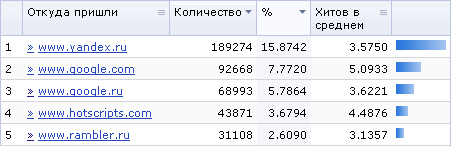
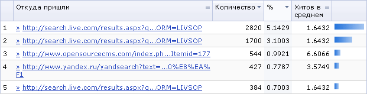

Переход на страницу Ссылающиеся сайты осуществляется таким образом: пункт меню Веб-аналитика > Ссылающиеся сайты > Переходы. Форма на странице отображает адреса страниц, с которых приходят на Ваш сайт, а также адреса страниц на Вашем сайте, куда осуществляется переход.
| Параметр | Описание |
|---|---|
| ID* | Поиск по маске ID записи. |
| ID сессии* | Поиск по маске ID сессии, открывшейся в момент захода посетителя на сайт. |
| Откуда пришли* | Отбор результатов по маске страницы, ссылающейся на Ваш сайт. |
| Протокол | Позволяет отфильтровать результаты по имени протокола (напр., http). |
| Домен | Позволяет найти сайты и страницы, имеющие вхождение данной строки в имя домена. |
| Страница* | Поиск по маске ссылающейся страницы. |
| Куда пришли* | Поиск по маске страницы, на которую ссылается страница-источник. В выпадающем списке (ошибка 404) можно указать, отображать ли запросы несуществующих страниц. |
| Период | Временной интервал, за который следует отобразить переходы со ссылающейся страницы. |
| Логика между полями | Определяет, будут ли при поиске учитываться все критерии, или требуется совпадение по хотя бы одному критерию. |
* - для данных полей Вы можете воспользоваться специальными логическими выражениями.
Чтобы установить фильтр по заданным критериям поиска, нажмите на кнопку Найти. Для отображения всех страниц нажмите на кнопку Отменить.
| Кнопка | Описание |
|---|---|
| Группировка | Открывает меню, в котором можно выбрать желаемый режим группировки результатов: по домену, по ссылке или без группировки. В зависимости от типа группировки, таблица отчета несколько изменяется. |
| Настроить | Позволяет перейти к диалогу настройки внешнего вида отчетной формы. |
| Excel | Экспортирует данные из таблицы в формат MS Excel. |
| ID | Откуда пришли | Куда пришли | Дата | Сессия |
|---|---|---|---|---|
| [1] | [2] | [3] | [4] | [5] |
| Выбрано: [6] | ||||
| Номер | Откуда пришли | Количество | % | Хитов в среднем | График |
|---|---|---|---|---|---|
| [1] | [2] | [3] | [4] | [5] | [6] |
| Выбрано: [7] | |||||


| © «Битрикс», 2001-2008, «1C-Битрикс», 2008 | 1С-Битрикс: Управление сайтом |